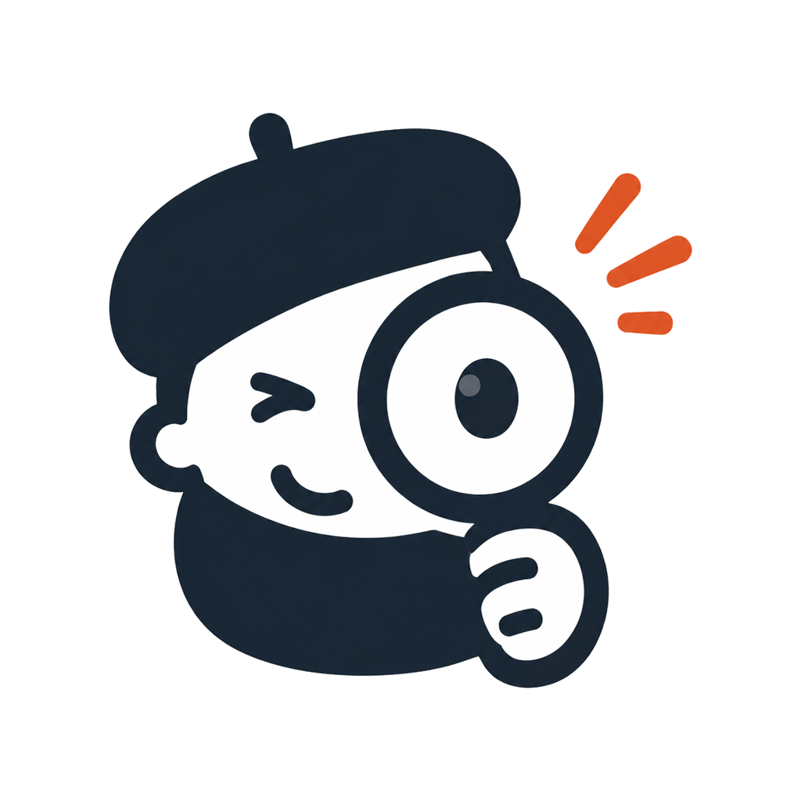
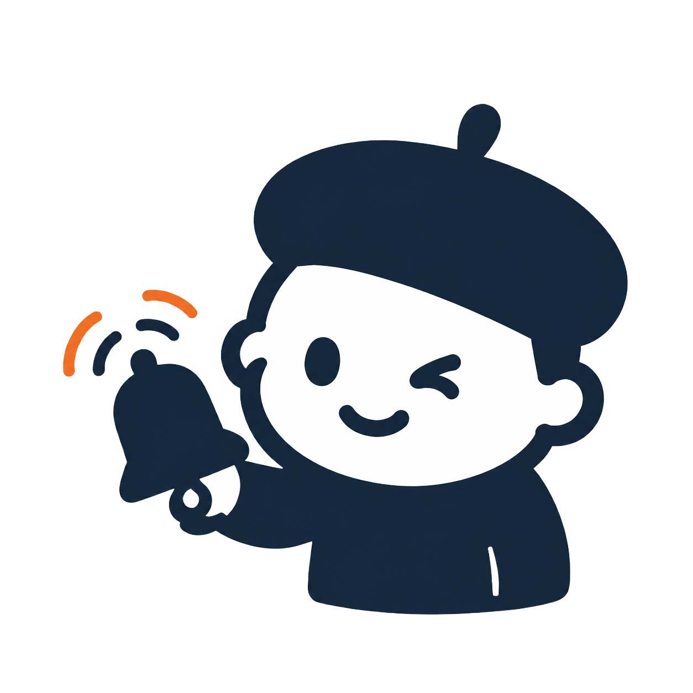
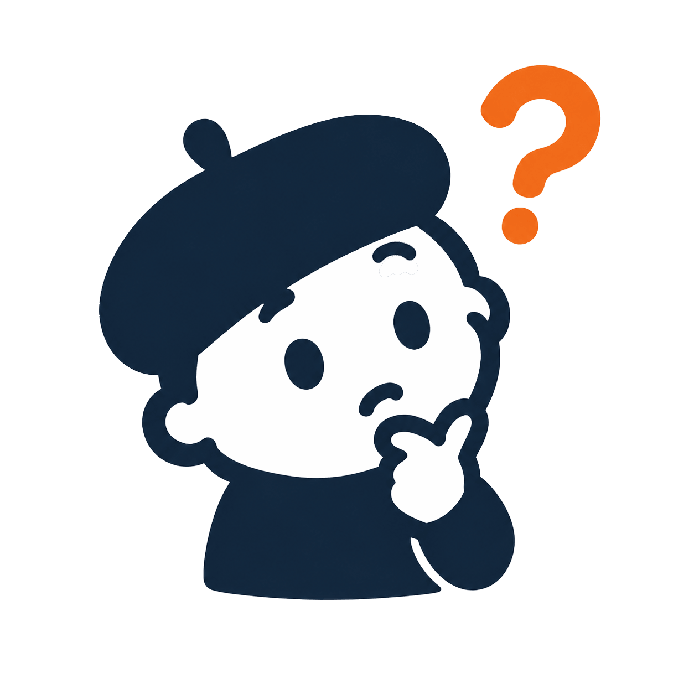

Saved on your computer
Clipboard content and resources stay local by default. Agent access to clipboard content starts off; you choose what to share with paired devices.

DingDongFree and open source · local Agent companion
A free, open-source desktop companion to classify, search, preview, and reuse copied content. Share Prompts, Skills, and MCP across Agents, collect their events, and send selected content or reminders to trusted devices.
Open DingDong with a shortcut when you need it.
Supported Agents can show a DingDong line with active Prompts, matching Skills, and available MCP connections. Claude Code can also use an optional status line alongside your existing HUD. Token totals appear when the session provides them.
A Skill * means the full instructions were loaded. An MCP * means a tool was called, even if the call failed. Prompts have no marker. Token display is on by default; you can turn it off in Settings.
agent DingDong
Try a message below to see a simulated reply and resource line.
Done. The layout and local preview have been checked.
https://github.com/JevonsCode/DingDongBuddy
The copied value will appear at the top of Clipboard.
How it works
Clipboard content and resources stay local by default. Agent access to clipboard content starts off; you choose what to share with paired devices.
For dynamic Skills, the Agent sees a name and description first, then loads the instructions when needed. Matching Prompts are delivered at task start.
Use a shortcut to search and classify copied content, preview before reuse, and pin saved items you need often.
Add Prompts, Skills, and MCP servers, then choose which projects or Agents can use them.
Pair a device to transfer files and clipboard items, or receive Agent reminders away from your computer.
Tell your Agent which resource to add or change and which project needs it. DingDong checks and saves the configuration.
Codex already has completion notifications. DingDong gathers connected-Agent events with unread history and the sound you choose; each client's own alert settings still apply.
Connected devices · Multiple computers
Scan each computer's QR code to pair it. You can see which computers are online and switch the active one. Files, clipboard items, and reminders stay grouped by their source computer.


Longer description · source · completion time
Items copied before pairing stay on the computer. To share an older item, choose Send to Device.
The web app does not read it. Choose text or a file and tap Send to share it.
Verified local connections have no file-size limit. Other routes keep the 25 MB limit. Follow progress on desktop or mobile, and pause or resume while both apps stay open.
On the same local network, DingDong tries a direct WebRTC connection first. Otherwise it uses an end-to-end encrypted relay. Android can use the web app without installing it. On iPhone and iPad, add it to the Home Screen to enable push notifications. Tap the tabs or swipe between them on mobile; a notification opens Agent reminders. Your phone controls notification vibration.
One resource library
Set the project or Agent for each resource. Matching Prompts arrive at task start. Dynamic Skills show a description before the Agent loads them. MCP servers are added to supported clients.
Group resources and choose their projects or Agents
Pi and Grok Build currently support Skill syncing. MCP setup and completion hooks vary by client; check the options shown in DingDong.
Enable the resources and choose where they apply first. Then ask in your own words.
The project Prompt is applied automatically before the Agent starts.
The Agent matches the Skill description, then loads its full workflow and files.
The configured MCP is available, and its tools are called only when needed.
1.7.0 development preview · local Token history
The development version adds Resource Manager → Token history, with a daily heatmap, year and source filters, and a day's details. The stable 1.6.2 downloads do not include this feature yet.
Usage is available when these clients provide usable local counts. Repeated cumulative records are deduplicated across the daily history.
Incomplete daily totals are lower bounds marked with ≥. Unavailable evidence is unknown, rather than an invented zero.
History stores numeric aggregates locally, without chat text, and is not uploaded with anonymous install statistics. Token counts are usage, not money or a complete bill.
Optional plugins
Open Resource Manager → Plugins to find Jev and the macOS selection tools. More plugins are on the way.
Install Jev and add your own API key. Your Agent can call it for judgments, choices, and scoring, with Jev token usage tracked separately.
Jev website and service terms →Copy selected text, or translate and explain it with your configured model. Supports local models and OpenAI- or Anthropic-compatible proxies.
Jev starts uninstalled. Selection tools stay off until you enable them. Pick what you need.
Keyboard and settings reference
These are the defaults. Record your own global or workspace shortcuts in Settings; they take effect immediately.
Open Settings → Keyboard shortcuts to record a combination. Hold Control on macOS or Alt on Windows to select the first five visible clipboard groups with 1–5. Combinations already used by DingDong or reserved actions cannot be saved.
| Action | macOS | Windows |
|---|---|---|
| Open or hide Clipboard | ⌘⇧V | Ctrl+Shift+V |
| Dynamic / Library / Clipboard | ⌃Q / ⌃W / ⌃E | Alt+Q / Alt+W / Alt+E |
| Focus Clipboard search | ⌘F | Ctrl+F |
| Show or hide filters | ⌘R | Ctrl+R |
| Use visible item 1–9 | ⌘1–9 | Ctrl+1–9 |
| Use visible item 1–9 as plain text | ⌥⌘1–9 | — |
| Select visible Clipboard group 1–5 | ⌃1–5 | Alt+1–5 |
| Move Clipboard item selection | ↑ / ↓ | ↑ / ↓ |
| Move Clipboard group selection | ← / → | ← / → |
| Preview selected item | Space | Space |
| Use selected item | Return | Enter |
| Close preview, then hide panel | Esc | Esc |
Settings stay on this computer and apply immediately unless a restart is noted.
| Setting | Default | Options or limits |
|---|---|---|
| Open or hide Clipboard | ⌘⇧V | Configurable; Windows defaults to Ctrl+Shift+V |
| Launch at startup | Off | On / off |
| Hide Dock icon (macOS) | Off | On / off |
| Language | System | System / English / 中文 / Español |
| Theme | Light | System / Light / Dark |
| Window opacity | 90% | 82%–96% |
| Default workspace | Dynamic | Dynamic / Library / Clipboard |
| Clipboard monitoring | Off | On / off |
| Clipboard retention | 5,000 items · 120 days | 20–5,000 items · 1–730 days |
| Remember Recent Agents | On | On / off |
| Recent Agent limits | 500 details · 24-hour count | 1–5,000 details · 1–8,760 hours |
| Completion sound | DingDong Classic | Built-in, custom, system, or muted |
| Agent reply footer symbols | ♥ / ♦ / ♠ | Customize Prompt, Skill, and MCP separately |
| Conversation Token usage | On | Exact totals for supported Codex, Claude Code, and Pi sessions; unsupported evidence is omitted |
| Menu bar alert color (macOS) | Orange | Orange / Pink / Blue / Green / Purple |
| Local Agent API port | 2333 | 1024–65535 · restart required |
Agent alerts
Connected Agents can send a reminder when they finish, get stuck, or need a decision. Pick a built-in sound or import an audio file.
Listen to a few below before choosing.
Choose a built-in sound or import your own in Settings. DingDong uses it for alerts from connected Agents.
Choose a sound to preview it
Built-in MCP bridge
For each supported Agent, choose whether Skills are loaded on demand or saved to its user or project folder. MCP connections use the client’s own configuration.
Let AI handle the setup
Use the MCP path shown in your installed DingDong app. The instruction below asks your Agent to connect it while keeping your existing settings.
Ready to paste into your Agent
For a client that supports MCP, add the matching snippet to its settings. The examples below use the macOS installation path.
{
"mcpServers": {
"dingdong": {
"command": "/Applications/DingDong.app/Contents/MCP/bundle/bin/dingdong_mcp"
}
}
}[mcp_servers.dingdong]
command = "/Applications/DingDong.app/Contents/MCP/bundle/bin/dingdong_mcp"dingdong_bridgeAsk DingDong what might help with the task at hand.
dingdong_search_assetsFind prompts, Skills, and MCP configurations by name or keyword.
dingdong_create_resourceCreate a disabled Prompt or MCP after checking for duplicates.
dingdong_update_resourceUpdate an existing Prompt or MCP while preserving omitted fields.
dingdong_install_skillInstall a complete Skill package through the dedicated safe workflow.
dingdong_bind_resource_scopeBind the resource to the project or Agent scope you requested.
dingdong_get_assetOpen one resource. Start with the description, then read the full text if needed.
dingdong_load_skillLoad the Skill the Agent has decided to use.
dingdong_recommend_mcpFind an MCP configuration that fits the current task.
dingdong_notifyRing when the task is done, stuck, or waiting for you.
Loopback HTTP API

You can use scripts too.The local API can check status, search resources, read a clipboard overview, and open a DingDong page.
/agent/manifest
/agent/bridge
/agent/prepare
/agent/workbench
/agent/resource/{id}
/clipboard/insights
/library
/library/export?type=skill
/library/import
/ding
Requires macOS 13 or newer. Not sure which Mac you have? Open Apple menu → About This Mac. “Chip” means Apple silicon; “Processor” means Intel.
Loading GitHub release asset counts…
The mascot has a separate Codex pet project. Its repository is private, so you will need access to open it.
Open the pet project